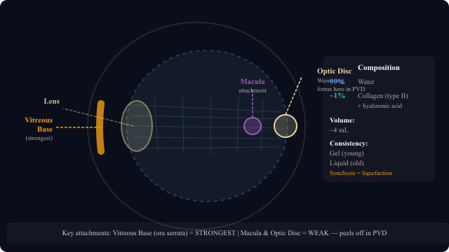

Composition, vitreous base, synchysis, posterior vitreous detachment, and retinal tears

The vitreous is a clear, gel-like substance that fills the space between the lens and the retina — the posterior chamber of the eye. It occupies about 4 mL (the largest compartment of the eye) and helps maintain the shape of the eyeball.
The vitreous base is a 3–6mm wide zone straddling the ora serrata (the junction between peripheral retina and pars plana). It is the strongest attachment between the vitreous and the retina — so strong that:
Synchysis is the gradual liquefaction of the vitreous gel as we age. The collagen fibers degenerate and pockets of liquid form throughout the gel.
Posterior Vitreous Detachment (PVD): Once enough liquid accumulates, it seeps through a gap in the posterior hyaloid membrane and gets behind the vitreous cortex, separating it from the retina. The gel peels away from the optic disc and macula.
Weiss Ring: When the vitreous peels off the optic disc, the circular adhesion detaches as a ring-shaped floater. You can see the Weiss ring directly on fundoscopy. Patients often describe it as a large irregular floater that suddenly appeared.
PVD with new floaters and flashes: Always do a dilated peripheral retinal exam. Around 10 to 15% of these patients have a retinal tear that needs laser photocoagulation before it turns into a full detachment.